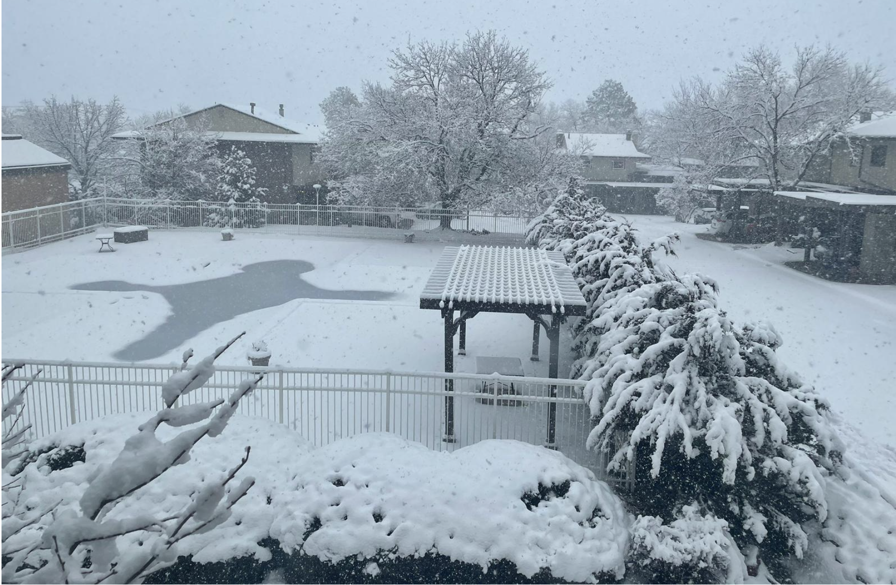

About
Hey there! I'm Sarvesh Tiku, a freshman at Georgia Tech, majoring in Computer Science at the College of Computing.
Atlanta's been awesome so far, and I’ve already made some incredible friends here.
Before this, I spent the last two years in Boulder, Colorado, and let me tell you, that place is pure magic!
The mountains, the snow—just stunning. If you ever get the chance, a trip to Colorado is a must. You won’t regret it.
When I’m not geeking out over tech, you’ll probably find me gardening, socialising, snapping random pics, or organizing my space—I’m a bit of a neat freak, honestly.
Building stuff through tech has been my jam since I was a kid, and I’m pumped to keep that going.
Right now, I’m all about diving into web development and working on projects that push the boundaries of tech while making a positive impact.
Thanks for stopping by! If you want to connect or chat, hit me up on Twitter or LinkedIn. Let's build something awesome together!

~ Miss my home in Boulder, Colorado.